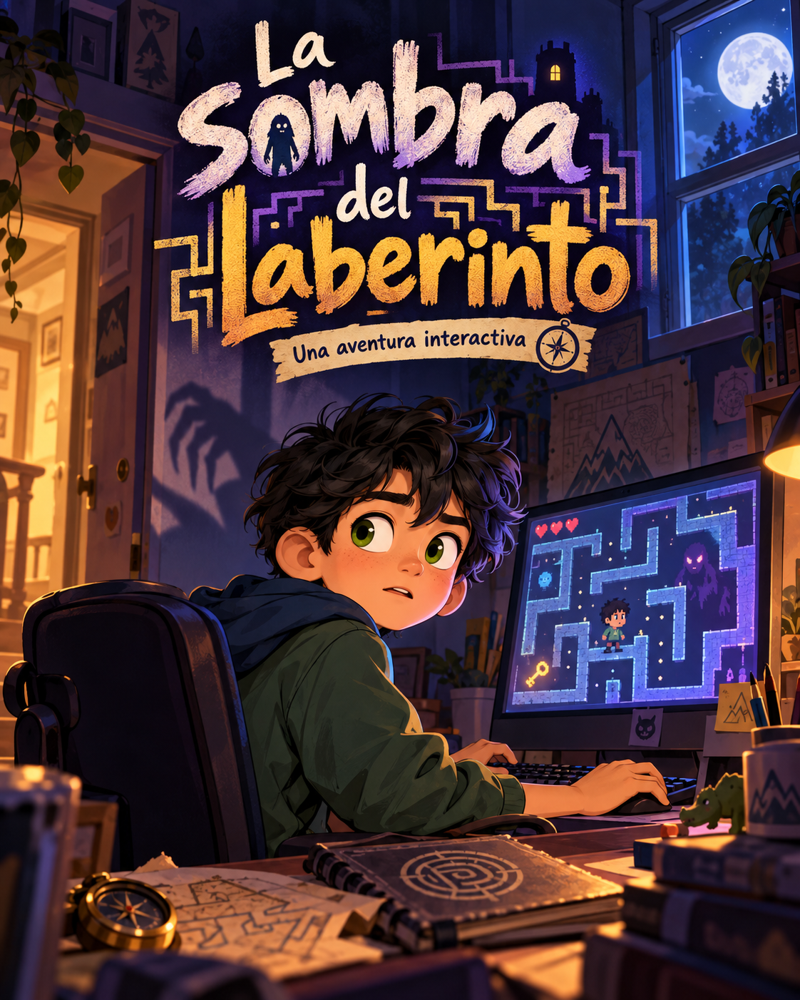

La sombra del laberinto
Una partida nocturna, una silueta imposible y una ventana que nadie recuerda haber abierto. ¿Te animas a resolver el misterio?
En este club, tú decides qué camino tomar. Descubre pistas, elige tu aventura y encuentra finales que nadie más esperaba.
Elegir una aventura →Elige un cuento. Cada decisión abre una puerta diferente.

Una partida nocturna, una silueta imposible y una ventana que nadie recuerda haber abierto. ¿Te animas a resolver el misterio?
Marca las historias que hayas terminado. ¡Cada libro es un mundo que ya exploraste!
Este primer prototipo guarda las marcas de lectura solamente en este navegador. No registra cuentas, nombres ni datos de niños. Las marcas se hacen manualmente y no prueban que el cuento se haya completado.